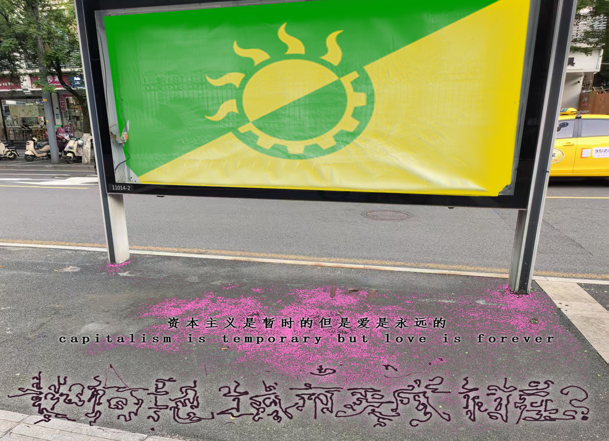

本活动阐释了“太阳能朋克”的概念，通过导览和制图来记录和观察与绿色能源和智能技术相一致的社区实践，旨在记录和干预绅士化行为。 This event elucidates the concept of "solarpism," using walkthroughs and mapping to record and observe community practices aligned with green energy and smart technology, aiming to document and intervene in gentrification behaviors.